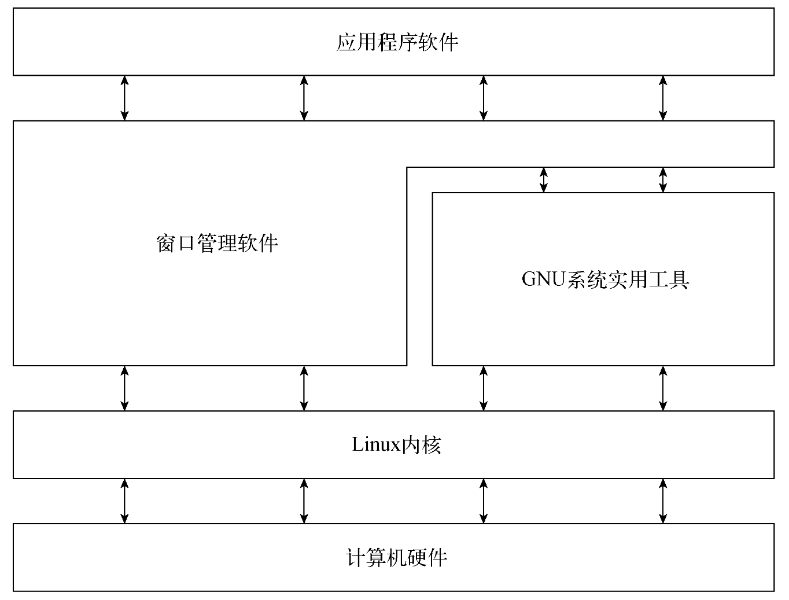

linux命令行
简介
Linux初探
Linux系统可划分为以下4部分。
- Linux内核
- GNU工具
- 图形化桌面环境
- 应用软件

Linux内核
Linux系统的核心是内核。内核控制着计算机系统的所有硬件和软件，在必要时分配硬件，并根据需要执行软件。
内核主要负责以下4种功能。
- 系统内存管理
- 软件程序管理
- 硬件设备管理
- 文件系统管理
系统内存管理
操作系统内核的主要功能之一是内存管理。内核不仅管理服务器上的可用物理内存，还可以创建并管理虚拟内存（实际并不存在的内存）。
软件程序管理
Linux操作系统称运行中的程序为进程。进程可以在前台运行，将输出显示在屏幕上；也可以在后台运行，隐藏到幕后。内核控制着Linux系统如何管理运行在系统中的所有进程。
内核创建了第一个进程（称为init进程）来启动系统中所有其他进程。当内核启动时，它会将init进程载入虚拟内存。内核在启动其他进程时，会在虚拟内存中给新进程分配一块专有区域来存储该进程用到的数据和代码。
在Linux中，有多种init进程实现，目前最流行的是以下两种。
SysVinit：Linux最初使用的是SysVinit（SysV）初始化方法，该方法基于Unix System V初始化方法。尽管如今很多Linux发行版已经不再使用SysVinit了，但在一些比较旧的Linux发行版中还能找到其身影。
systemd：systemd初始化方法诞生于2010年，现在已经成为Linux发行版中最流行的初始化和进程管理系统。SysVinit初始化方法使用运行级（runlevel）的概念来决定启动哪个进程。运行级定义了Linux系统的运行状态以及每种状态下应该运行的进程。下图显示了SysVinit初始化方法中定义的各种运行级。
/etc/inittab文件定义了系统的默认运行级。特定运行级下启动的进程是在/etc/rc.d目录下的各个子目录中定义的。可以使用runlevel命令随时查看当前运行级。
1 | $ runlevel |
systemd初始化方法得以流行起来的原因在于能够根据不同的事件启动进程。
- 系统启动时
- 连接到特定的硬件设备时
- 服务启动时·建立好网络连接时
- 计时器到期时
systemd方法通过将事件与单元文件（unit file）链接来决定运行哪些进程。每个单元文件定义了特定事件发生时要启动的程序。systemctl程序允许启动、停止和列出系统中当前运行的单元文件。
systemd方法将单元文件划归为目标（target）。目标定义了Linux系统的特定运行状态，这和SysVinit运行级的概念类似。在系统启动时，default.target单元定义了要启动的所有单元文件。可以使用systemctl命令查看当前默认目标：
1 | $ systemctl get-default |
graphical.target单元文件定义了多用户图形环境运行时要启动的进程，类似于旧的SysVinit运行级5。
硬件设备管理
内核的另一职责是管理硬件。任何需要与Linux系统通信的设备都必须在内核代码中加入其驱动程序。驱动程序相当于应用程序和硬件设备的“中间人”，允许内核同设备之间交换数据。向Linux内核中插入设备驱动的方法有两种。
- 将驱动程序编译入内核
- 将设备驱动模块加入内核
以前，插入设备驱动程序的唯一途径就是重新编译内核。每次给系统添加新设备时，都不得不重新编译一遍内核代码。随着Linux内核支持的硬件设备越来越多，这个过程也变得越来越低效。不过好在Linux开发人员设计出了一种更好的方法以将驱动程序插入运行中的内核。
开发人员提出了内核模块的概念，允许在无须重新编译内核的情况下将驱动程序插入运行中的内核。另外，当设备不再使用时也可将内核模块从内核中移走。这种方式极大地简化和扩展了硬件设备在Linux中的使用。
Linux系统将硬件设备视为一种特殊文件，称为设备文件。设备文件分为3种：
- 字符设备文件
- 块设备文件
- 网络设备文件
字符设备文件对应于每次只能处理一个字符的设备。大多数类型的调制解调器和终端是作为字符设备文件创建的。块设备文件对应于每次以块形式处理数据的设备，比如硬盘驱动器。
网络设备文件对应于采用数据包发送和接收数据的设备，这包括网卡和一个特殊的环回设备，后者允许Linux系统使用常见的网络编程协议同自身通信。
Linux会为系统的每个设备都创建一种称为“节点”的特殊文件。与设备的所有通信都是通过设备节点完成的。每个节点都有一个唯一的数值对，以供Linux内核标识。数值对包括一个主设备号和一个次设备号。类似的设备会被划分到相同的主设备号下。次设备号用于标识主设备组下的某个特定设备。
文件系统管理
不同于其他一些操作系统，Linux内核支持通过不同类型的文件系统读写硬盘数据。除了自有的多种文件系统，Linux还能够读写其他操作系统（比如Microsoft Windows）的文件系统。内核必须在编译时就加入对所有要用到的文件系统的支持。
Linux内核采用虚拟文件系统（virtual file system，VFS）作为和各种文件系统交互的接口。这为Linux内核与其他类型文件系统之间的通信提供了一个标准接口。当文件系统被挂载和使用时，VFS会在内存中缓存相关信息。
核心GNU实用工具
GNU项目旨在为Unix系统管理员打造出一套可用的类Unix环境。这个目标促使该项目移植了很多常见的Unix系统命令行工具。供Linux系统使用的这组核心工具被称为coreutils（core utilities）软件包。
GNU coreutils软件包由3部分构成。
- 文件实用工具
- 文本实用工具
- 进程实用工具
GNU/Linux shell是一种特殊的交互式工具，为用户提供了启动程序、管理文件系统中的文件以及运行在Linux系统中的进程的途径。shell的核心是命令行提示符，负责shell的交互部分，允许用户输入文本命令，然后解释命令并在内核中执行。
shell包含一组内部命令，可用于完成复制文件、移动文件、重命名文件、显示和终止系统中正在运行的程序这类操作。除此之外，shell也允许在命令行提示符中输入程序的名称，它会将程序名称传递给内核以启动程序。
也可以将多个shell命令放入文件中作为程序执行。这些文件称作shell脚本。凡是能在命令行中执行的命令都可放入shell脚本中作为一组命令执行。这为创建通常需要执行多个命令的实用工具提供了极大的便利。
在Linux系统中，有相当多的shell可供使用。不同的shell有不同的特性，有些适用于创建脚本，有些则适用于管理进程。所有Linux发行版默认的shell都是bash shell。bash shell由GNU项目开发，被作为标准Unix shell（Bourne shell，以其创建者得名）的替代品。bash shell的名字玩的是一个文字游戏，即Bourne again shell。
除了bash shell，还有其他几种流行的shell：